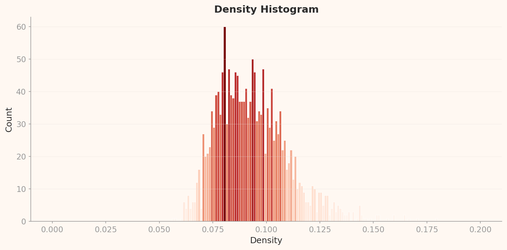
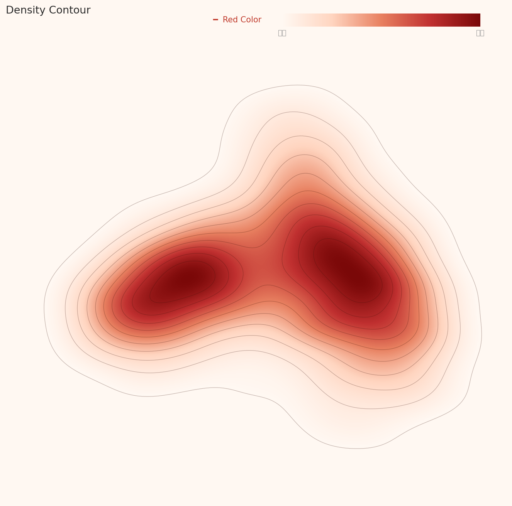
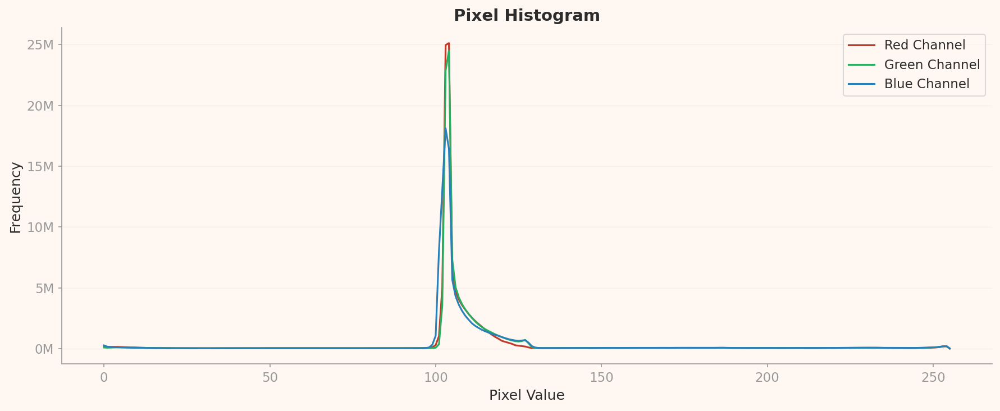

Evaluation Methodology
This report re-interprets DataClinic's three-level diagnostic results (Level I / II / III) through the ISO/IEC 5259-2:2024 Quality Measure (QM) framework as an independent evaluation. The metrics, charts, and outlier samples measured by DataClinic are mapped to each ISO QM's formal definition, with Pass / Fail / Caution verdicts rendered independently.
Summary: We independently evaluated the SpectralWaste recycling waste image dataset (2,794 images, 6 classes) against ISO/IEC 5259-2:2024 Quality Measures (QMs). DataClinic's three-level diagnostic metrics and charts were mapped to ISO QM definitions. Of the 14 QMs assessed, 3 passed, 5 failed, and 3 received caution flags. The core issues are severe class imbalance (19.6:1 max ratio) and a lack of representativeness and diversity caused by a single capture environment. DataClinic's "Bulk-up" recommendation aligns precisely with the ISO Bal-ML-1 and Eft-ML-1 Fail verdicts.
1 Dataset Overview
Basic Information
| Dataset | SpectralWaste |
| Source | Kaggle |
| Diagnosed Images | 1,709 (out of 2,794 total) |
| Classes | 6 |
| Image Size | 276 x 256 px (RGB) |
| DataClinic Score | 68 / 100 (Moderate) |
Class Distribution (L1 Diagnosis)
| Class | Samples | Ratio |
|---|---|---|
| video_tape | 646 | 37.8% |
| basket | 384 | 22.5% |
| film | 248 | 14.5% |
| cardboard | 199 | 11.6% |
| bag | 199 | 11.6% |
| filament | 33 | 1.9% |
Max/Min class ratio: 19.6 : 1 (video_tape vs filament)

Representative image collage from the SpectralWaste dataset -- six types of recycling waste on a conveyor belt
SpectralWaste is a recycling waste dataset collected by synchronizing RGB and hyperspectral imaging on a prototype conveyor belt. Each image includes a composite bar chart summarizing the spectral signature of each object. While the dataset was designed for training automated recycling classification models, class imbalance and a homogeneous capture environment may limit model performance.
2 ISO/IEC 5259-2 Evaluation Framework
This report independently applies the Quality Measures (QMs) defined in ISO/IEC 5259-2:2024 to the SpectralWaste image dataset. DataClinic's three-level diagnostic outputs are mapped to ISO QM definitions and independently interpreted — connecting what DataClinic measured with how ISO evaluates it.
| DataClinic Level | What Is Measured | Mapped ISO 5259-2 QMs |
|---|---|---|
| Level I | Class counts, missing values, pixel statistics, mean images | Com-ML-1/3/5, Bal-ML-1, Eft-ML-1 |
| Level II | General-purpose embedding (1280-dim) density, outliers, similarity | Sim-ML-1/2, Rep-ML-1/3, Div-ML-1, Con-ML-2, Acc-ML-7 |
| Level III | Domain-specific lens (32-dim) density and cluster analysis | Rep-ML-1, Div-ML-1/2, Bal-ML-2 |
Intrinsic DQCs (3)
Accuracy, Completeness, Consistency
DataClinic Level I
AI/ML DQCs (9)
Balance, Diversity, Representativeness, Similarity, Relevance, Effectiveness, Auditability, Identifiability, Timeliness
DataClinic Level II/III
Verdict Criteria
Pass Meets criteria
Fail Below threshold
Caution Needs further review
-- N/A Not measured
3 Intrinsic Quality Assessment
| QM ID | Item | ISO Definition | Verdict |
|---|---|---|---|
| Com-ML-1 | Value Completeness | Proportion of data items without null values | Pass |
| Com-ML-3 | Feature Completeness | Proportion of feature-related items without null values | Pass |
| Com-ML-5 | Label Completeness | Proportion of samples with complete labels | Pass |
| Con-ML-2 | Label Consistency | Proportion of similar samples with consistent labels | Caution |
| Acc-ML-7 | Label Accuracy | Estimated mislabel rate via outlier detection | Caution |
Com-ML-1/3/5 -- Completeness Pass Rationale
DataClinic Level I diagnosis confirmed zero missing values across the dataset. All 1,709 images have three RGB channels intact, and labels for all six classes are correctly assigned. This satisfies ISO 5259-2 completeness criteria (value, feature, and label).

bag

basket

cardboard

filament

film

video_tape
Mean images per class -- labels are correctly assigned and mean images render normally for all six classes
Con-ML-2 / Acc-ML-7 -- Caution Rationale
Con-ML-2 (Label Consistency): ISO 5259-2 requires that similar instances in embedding space share the same label.
The Level II low-density distribution reveals multi-modal clusters with ambiguous class boundaries in certain regions.
Potential label cross-contamination between similar samples cannot be ruled out and warrants further review.
Acc-ML-7 (Label Accuracy): Twenty low-density outliers were identified at both Level II and Level III.
Among these, the low-density samples in the filament and cardboard classes may stem from the peculiarities of composite spectral bar chart images,
but the possibility of labeling errors should also be investigated.

filament (low density)

cardboard (low density)

video_tape (high density)

video_tape (high density)
L2 outlier samples -- low-density (outliers) concentrate in filament and cardboard; high-density (typical) in video_tape
4 Balance Assessment -- Bal-ML
| QM ID | Item | ISO Definition | Measurement | Verdict |
|---|---|---|---|---|
| Bal-ML-1 | Class Balance | Degree of balance in class-wise sample counts | Std. dev. 242.7, max ratio 19.6:1 | Fail |
| Bal-ML-2 | Feature Balance | Balance of feature distributions within the dataset | Color/size skew (confirmed at L3) | Fail |
Bal-ML-1 -- Severe Class Imbalance
ISO 5259-2 Bal-ML-1 measures the degree of balance across class-wise sample counts. A max/min class ratio exceeding 10:1 is generally considered to cause severe model bias toward minority classes. SpectralWaste's video_tape (646 images) to filament (33 images) ratio stands at 19.6:1, qualifying as severe imbalance under ISO criteria. The filament class with only 33 images falls well below the minimum threshold commonly required for deep learning (typically 100+ images). Training under these conditions is highly likely to cause the model to misclassify filament as video_tape or another majority class.

L2 density box chart -- comparing density distribution spread across classes; video_tape shows the widest range

L3 domain-specific lens box chart -- inter-class density variance is even more pronounced than at L2
Bal-ML-2 -- Feature Imbalance
ISO 5259-2 Bal-ML-2 measures whether intrinsic features such as color, size, and shape are evenly distributed across the dataset. Level III analysis (domain-specific 32-dimensional lens) repeatedly revealed "identical waste colors and small-size features." This reflects how the single conveyor belt environment has homogenized lighting, background, and viewing angle characteristics. In real-world industrial settings, a variety of lighting conditions, backgrounds, and waste states exist, meaning this feature skew could create a significant domain gap.

bag

filament

film

video_tape
L3 per-class density plots -- different distribution shapes and positions across classes indicate feature imbalance
5 Similarity Assessment -- Sim-ML
| QM ID | Item | ISO Definition | Measurement | Verdict |
|---|---|---|---|---|
| Sim-ML-1 | Duplicate Instance Ratio | Proportion of duplicate or near-duplicate samples | L2 low density = low duplication | Pass |
| Sim-ML-2 | Intra-class Similarity | Average similarity among samples within the same class | High-density concentration in video_tape | Caution |
Sim-ML-1 -- Pass: Low Duplication
ISO 5259-2 Sim-ML-1 measures the proportion of samples that are excessively close in embedding space (effectively duplicates). High duplication leads to overfitting. The Level II diagnosis rated overall density as low, which paradoxically means there are few duplicate samples. SpectralWaste actually falls on the data-scarce side. While this is a Pass from the Sim-ML-1 perspective, it feeds directly into the data sufficiency issue (Eft-ML).

L2 density histogram -- overall low density distribution suggests data scarcity rather than duplication

L3 density histogram -- the same low-density pattern is confirmed under the domain-specific lens
Sim-ML-2 -- Caution: High Intra-class Similarity in video_tape
Sim-ML-2 flags the risk that when samples within a class are too similar, the model fails to learn broad decision boundaries for that class. At both Level II and Level III, all top-4 high-density outliers belong to the video_tape class. These samples are concentrated from the same capture date, time, and session (e.g., train__20230119_03_*), resulting in low intra-class diversity and high intra-class similarity.
ins1 -- 0.1795
ins3 -- 0.1701

ins13 -- 0.1667

ins13 -- 0.1649
L2 top-4 high-density samples -- all video_tape, all from the same session (20230119_03)
6 Representativeness Assessment -- Rep-ML
| QM ID | Item | ISO Definition | Verdict |
|---|---|---|---|
| Rep-ML-1 | Target Domain Coverage | Degree to which diverse real-world deployment conditions are covered | Fail |
| Rep-ML-3 | Distribution Distance (KL-divergence) | Divergence between training data distribution and real-world distribution | Fail |
Rep-ML-1 -- Insufficient Target Domain Coverage
ISO 5259-2 Rep-ML-1 evaluates whether the training data adequately covers the diverse conditions found in the actual deployment environment. SpectralWaste was collected on a single prototype conveyor belt. Real-world recycling facilities encounter varied lighting conditions (fluorescent, natural, nighttime), belt speeds, overlapping waste, contaminated materials, and diverse viewing angles. The Level III diagnosis confirming "urban setting, single cluster" directly reflects this domain bias. Under Rep-ML-1 criteria, real-world deployment coverage is severely inadequate.

L2 PCA overall distribution -- six classes overlap or scatter across embedding space

L3 PCA distribution -- under the domain-specific lens, samples collapse into a single cluster, confirming lack of environmental diversity
Rep-ML-3 -- Distribution Gap (KL-divergence)
Rep-ML-3 measures KL-divergence between the training data distribution and the real-world deployment distribution. While no real-world reference data is available to compute an exact KL-divergence score, the Level II density contour map shows a low-density, fragmented distribution, suggesting that the training data fails to represent the continuous distribution expected in production. Given the constraint of a single conveyor belt capture environment, the risk of distribution shift after deployment is high.

L2 overall density contour -- low density, fragmented cluster pattern

L3 overall density contour -- a single concentrated density region under the domain lens
7 Diversity Assessment -- Div-ML
| QM ID | Item | ISO Definition | Verdict |
|---|---|---|---|
| Div-ML-1 | Intrinsic Dimensionality | Effective dimensionality of the data -- how many distinct features exist | Caution |
| Div-ML-2 | Feature Diversity | Diversity in visual features such as color, shape, and size | Fail |
Div-ML-1 -- Multi-modal Distribution, but Limited Cluster Count
ISO 5259-2 Div-ML-1 measures diversity through the intrinsic dimensionality of the data. At Level II, a multi-modal distribution is observed, giving an initial impression of diversity. However, at Level III (domain-specific 32-dimensional lens), the data converges into a single cluster. This means that while the general-purpose lens (1,280 dimensions) shows separated clusters, the actual diversity of recycling-domain-relevant features is low. A Caution verdict is warranted under Div-ML-1.

L2 density contour -- multi-modal distribution with multiple clusters under the general-purpose lens

L3 density contour -- converges into a single cluster under the domain lens, indicating low effective diversity
Div-ML-2 -- Insufficient Visual Feature Diversity
Div-ML-2 measures diversity across visual features including color, size, shape, background, and lighting. Level III analysis found that "identical waste colors and small-size features" dominate the dataset. The pixel histogram also confirms that RGB distributions are concentrated in a narrow color range. This results from a single conveyor belt, fixed capture distance, and uniform lighting environment. Real-world recycling classifiers must handle crumpled, contaminated, or mixed waste in a wide range of sizes, colors, and backgrounds, making this dataset severely lacking under Div-ML-2 criteria.

L1 pixel histogram -- RGB channel pixel distributions are concentrated in a narrow brightness and color range
8 Effectiveness & Identifiability Assessment
| QM ID | Item | ISO Definition | Measurement | Verdict |
|---|---|---|---|---|
| Eft-ML-1 | Effective Sample Ratio | Proportion of classes meeting the training threshold | Min. class: 33 images (filament) | Fail |
| Idn-ML-1 | Identifiability (PII) | Presence of personally identifiable information | Waste images only -- no PII | Pass |
Eft-ML-1 -- Insufficient Effective Samples
ISO 5259-2 Eft-ML-1 measures whether each class meets the minimum sample threshold for effective model training. The typical minimum for deep learning classification is 100+ images per class, with 300+ recommended in practice. SpectralWaste's filament class has only 33 images, falling far short of this threshold. The bag and cardboard classes also have only 199 images each, below the recommended 300. In total, four of the six classes fail to meet the recommended threshold. This finding aligns precisely with DataClinic's "Data Bulk-up" recommendation and the ISO Eft-ML-1 Fail verdict.
Idn-ML-1 -- Pass: No PII Risk
ISO 5259-2 Idn-ML-1 requires that datasets contain no personally identifiable information (faces, license plates, names, etc.). SpectralWaste consists entirely of images showing recycling waste on a conveyor belt, with no people, personal data, or any identifiable elements present. The dataset is safe from a PII standpoint, and no personal data processing issues arise for commercial use (separate licensing restrictions notwithstanding).
9 Unmeasured Items (Auditability, Relevance, Timeliness)
| QM ID | Item | ISO Definition | Status | Verdict |
|---|---|---|---|---|
| Aud-ML-1/2 | Auditability | Data lineage tracking, quality audit logs | Planned for AADS extension | -- N/A |
| Rel-ML-1/2 | Relevance | Contextual/purpose relevance, outlier detection | Planned for AADS extension | -- N/A |
| Tml-ML-1 | Timeliness | Data freshness, appropriateness of collection date | On roadmap | -- N/A |
Tml-ML-1 (Timeliness) note: SpectralWaste was collected between 2022 and 2023. As recycling waste types and packaging trends continue to evolve (e.g., new-material films, biodegradable bags), the dataset may not reflect current recycling conditions. Once timeliness measurement tools are in place, this item can also be assessed.
10 Summary & Recommendations
| DQC Group | QM ID | Item | Verdict | Severity |
|---|---|---|---|---|
| Completeness | Com-ML-1/3/5 | Value, Feature & Label Completeness | Pass | -- |
| Consistency | Con-ML-2 | Label Consistency | Caution | Medium |
| Accuracy | Acc-ML-7 | Label Accuracy | Caution | Medium |
| Balance | Bal-ML-1 | Class Balance | Fail | Critical |
| Balance | Bal-ML-2 | Feature Balance | Fail | High |
| Similarity | Sim-ML-1 | Duplicate Instance Ratio | Pass | -- |
| Similarity | Sim-ML-2 | Intra-class Similarity | Caution | Medium |
| Representativeness | Rep-ML-1 | Domain Coverage | Fail | Critical |
| Representativeness | Rep-ML-3 | KL-divergence | Fail | High |
| Diversity | Div-ML-1 | Intrinsic Dimensionality | Caution | Medium |
| Diversity | Div-ML-2 | Feature Diversity | Fail | High |
| Effectiveness | Eft-ML-1 | Effective Sample Ratio | Fail | Critical |
| Identifiability | Idn-ML-1 | PII Risk | Pass | -- |
| Auditability, Relevance, Timeliness | Aud/Rel/Tml | -- | -- N/A | -- |
Immediate Action
- Bal-ML-1: Collect or synthesize additional filament data (target: 300+ images minimum)
- Eft-ML-1: Bulk up all four under-threshold classes via data collection or augmentation
Mid-Term Improvement
- Rep-ML-1: Expand capture environments with diverse lighting, backgrounds, and viewing angles
- Div-ML-2: Include contaminated, crumpled, and mixed waste samples
- Bal-ML-2: Diversify color and size feature distributions
Monitoring
- Con-ML-2: Cross-verify labels between similar samples
- Acc-ML-7: Manually review all 20 low-density outlier labels
- Sim-ML-2: Diversify video_tape capture sessions
DataClinic Recommendation vs. ISO 5259 Verdict Alignment
DataClinic's "Data Bulk-up" recommendation aligns precisely with the ISO 5259-2 Bal-ML-1 (class imbalance) and Eft-ML-1 (insufficient effective samples) Fail verdicts. The fact that two independent frameworks -- using different methodologies -- arrive at the same conclusion validates DataClinic's diagnostic results in the language of ISO international standards. This confirms that DataClinic effectively implements the ISO 5259-2 Quality Measures in practice.
References
- [1] ISO/IEC JTC 1/SC 42. (2024). ISO/IEC 5259-2:2024 -- Part 2: Data quality measures.
- [2] DataClinic Report #223 -- SpectralWaste. dataclinic.ai/en/report/223
- [3] SpectralWaste Dataset. Kaggle
- [4] Pebblous. (2025). AI Data Quality Standards and Pebblous DataClinic: Quantitative Mapping to ISO/IEC 5259-2